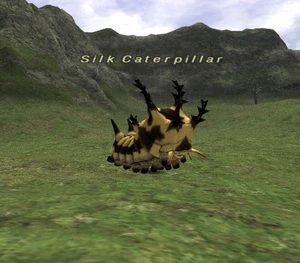

Level 75 reference · Zenith rules
|
Job: Notorious Monster |
 |

|
Zone |
Level |
Drops |
Steal |
Spawns |
Notes | ||||||
|
28-30 |
1 |
| |||||||||
|
HP = Detects Low HP; M = Detects Magic; Sc = Follows by Scent; T(S) = True-sight; T(H) = True-hearing JA = Detects job abilities; WS = Detects weaponskills; Z(D) = Asleep in Daytime; Z(N) = Asleep at Nighttime | |||||||||||
 Image source
Image source
Notes:
- Located around K-7
- Spawns when the Airship flies by overhead.
- Killable solo at level 34
- Soloed by 27BST with ease using Berry Grubs and Poison Leechs
- Involved in Quests: Fear Of Flying
Adapted from Eden Wiki: Silk Caterpillar · Contributors and history · CC BY-SA 4.0. Revision 44605. Layout, links and optional background text adapted for Zenith.